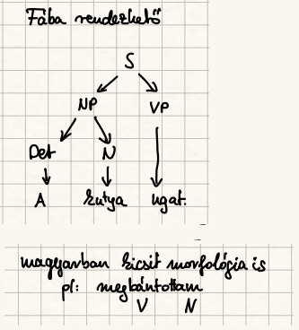
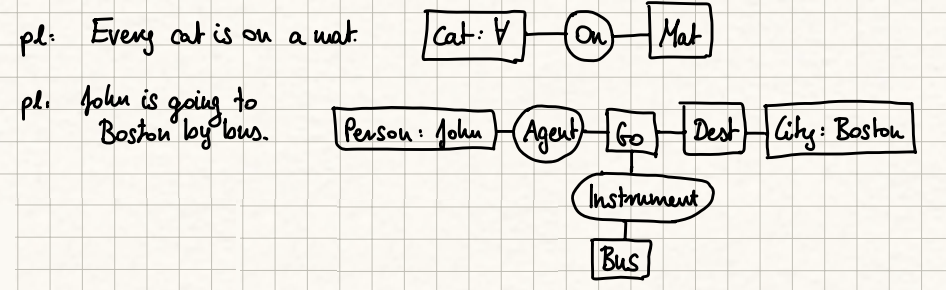

← Vissza
A Nyelvtechnológia Alapjai
Kidolgozta: Bakó András
FIGYELEM !!!! Esetleges hibákért vagy hiányosságokért nem tudok felelősséget vállalni.
Tartalom
- Karakterek és betűreprezentációs megoldások a világ nyelveiben. A pontos gépi rendezés
nehézségei. Alapvető nyelvstatisztikai törvények. n-gramok. Karakter- és n- gram-alapú statisztikai
megfigyelések.
- Reguláris kifejezések használata a gépi nyelvészetben. Véges automata (FSA), véges fordító
(FST) és szerepük a gépi nyelvészetben. A véges állapotú automata és kiterjesztései (RTN , ATN).
- Kétszintes morfológia. Unifikációs morfológia. A számítógépes morfológia
alkalmazásai (helyesírás, elválasztás, intelligens keresés, intelligens csere). A pontosság és
a fedés viszonya a különböző alkalmazásokban
- Mondatreprezentációs megoldások a gépi nyelvészetben (függőségi és közvetlen összetevős
szerkezet, X-vonás nyelvtanok). Jegyszerkezetek, DAG, unifikáció, unifikálhatóság. Alapvető
mondatelemzési módszerek (BU és TD-elemzők) és kombinációik. Az unifikáció és
alkalmazásai a nyelvtechnológiában (morfológiában, szintaxisban).
- A szintaktikai szerepek és a jelentés viszonya. Esetek a mélyben és a felszínen. Jelentésegyértelműsítés. Fogalmi reprezentációk, forgatókönyvek. Híres fogalmi hálók. Ontológiák,
WordNet. Az emberi felhasználásra készült szótárakban való keresés nyelvfüggő problémái. Az
„ablakos" kommunikáció nehézségei miatt kialakuló gyorsfordítók és tulajdonságaik.
- Korpuszok. Gépi tanulás korpuszokból. Szóbeágyazás. Párhuzamos korpuszok,
szövegszinkronizáció, fordítómemóriák. A fordítómemóriák és a gépi fordítás viszonya.
Szabályalapú, statisztikai és neurális hálós gépi fordítás
Betűk és karakterek
▶ Előadás ezen a részen (bevezető: a hangtól a karakterig)
Fonéma
▶ Előadás ezen a részen
- A beszélt nyelvben a fonéma a hangok elemi, elvont egysége, amely egy adott nyelvben önálló egységet alkot, mivel más fonémákkal szemben jelentés-megkülönböztető szerepe van.
- Nyelvtől függően egy-egy fonéma alá több beszédhang is tartozhat, amelyek általában fonetikailag hasonlók.
- Ha két beszédhang egyikének a helyére behelyettesítjük a másikat, és más szótári egységet kapunk eredményül, a két beszédhangot két különböző fonémához soroljuk:
géz, kéz, méz, néz, réz → /g/, /k/, /m/, /n/, /r/
- Vannak még a fonémadefiníciónak további pontosításai, de a lényeg, hogy nem beszédhangról van szó, amik a különböző nyelvekben más és más fonémákhoz is tartozhatnak.
Fonetikus ábécé
▶ Előadás ezen a részen
- Az IPA a latin (angol) ábécén alapszik.
- A legtöbb latin betűs nyelv ugyanúgy ejt többet is: [b], [d], [f], [h], [k], [l], [m], [n], [p], [t], [v] stb.
- Vannak közöttük olyanok, melyek kiejtése a legtöbb latin betűvel író nyelvben eltér: [j], [r], [y] stb.
- Vannak olyan jelek, melyeket a latin betűk átalakításával hoztak létre, vagy írott formájukat használják: [ɛ], [ɜ] stb.
- Bizonyos elemeket a görög ábécéből vettek: [β], [ɣ], [ɛ], [θ], [χ], [ʋ] stb.
- A magyar nyelv 14 magánhangzó- és 24 mássalhangzófonémája az IPA rendszerben is megjeleníthető.
Karakterek és betűreprezentáció
▶ Előadás ezen a részen
Betű: egy írásrendszer elemi jele, amely egy fonémát (hangot) jelöl az adott nyelv ortográfiájában. Nyelvi-lingvisztikai fogalom; az ábécé egységei.
Karakter: számítógépes fogalom — a tárolt szöveg legkisebb, tovább nem bontható egysége. A betű a karakter speciális esete: minden betű karakter, de nem minden karakter betű (pl. számjegyek, írásjelek, vezérlőkarakterek szintén karakterek).
Karakter: számítógépes szöveg leképezési egysége, absztrakt.
Karakterkód: karakterekhez megfeleltetett számsor.
Karakterkészlet: karakterek + karakterkódjaik.
Kódlap: karakterkészlet saját számtartományával (ha egy helyen több is van).
Betűkészlet: megjeleníthető a karakterkészlet karaktereinek grafikus képei.

Világ nyelveiben
▶ Előadás ezen a részen
- ASCII (128 karakter) – az első kódtábla, csak az angol ABC betűit tartalmazta; Amerika indult a számítástechnikával, nekik ez elég volt.
- ISO 8859-1 (Latin-1) (256 karakter) – az első 128 megegyezik az ASCII-val, a második 128 a nyugat-európai nyelvek (német, francia, svéd) ékezetes betűit fedi le.
- ISO 8859-2 (Latin-2) (256 karakter) – ugyanúgy épül fel, de a második 128 a kelet-európai nyelvek (pl. magyar, lengyel, cseh) karaktereit tartalmazza.
- UCS (Universal Character Set) – az ISO nemzetközi szabványügyi szervezet fejlesztette; először 16 bites volt (kb. 65 000 karakter), majd 32 bitesre bővítették, hogy minden nyelv és írásrendszer beleférjen.
▶ Előadás ezen a részen
- Unicode – egy amerikai konzorcium fejlesztette párhuzamosan az UCS-sel; szintén karakterkészlet + kódolási formátum (UTF-8), és szintén 16 bitesre váltott. Egy idő után két egymással versengő szabvány létezett egyszerre.
- Összevonás (1991) – mivel két hasonló rendszer létezett párhuzamosan, 1991-ben az ISO és az Unicode konzorcium összehangolta a kettőt: a karakterkódok teljesen kompatibilisek lettek. Azóta csak Unicoderól beszélünk – ma ez az egyetlen világszabvány.
A pontos gépi rendezés lehetőségei
▶ Előadás ezen a részen
Alapvetőleg a rendezésben a világ nyelvek különbségei okozzák.
Erre megoldás, hogy a könyvtári rendezésre alapból a latint használjuk, majd a lokális kis nyelvekkel rendezzük a többit. És a lokális karakterek után jönnek az idegen betűk. (pl.: a, á, â, ą ...)
De mi magyarul beszélünk és ezért nézzük meg a Magyar akadémia rendezés legfontosabb szabályait:
• Különböző nyelvek ABC-je esetén egyes karaktereket sem tudunk egyértelműen kezelni → transzliterálási probléma
• Szövegfájlban néha csak az első betű alapján történik a rendezés
• Magyar ábécé szerinti rendezés:
– abc-beli sorrend
– d < dz < dzs (multigráfok)
– cs, dz, dzs külön egységként kezelve
– ékezetes és ékezet nélküli betűk: i = í, e = é, a = á, stb.
– kis- és nagybetűk kezelése: azonosként értelmezhető (pl. Eger, egér)
– többszavas kifejezéseknél a szóközök figyelmen kívül hagyása
Részletek :
- A kiejtés szerinti írás problémái; az ábécébe rendezés elvei.
- Átjárás ábécék között: transzliterálási problémák.
- A magyar akadémiai rendezés főbb szabályai:
- A különböző betűvel kezdődő szavakat az első betűk ábécébeli helye szerint állítjuk rendbe, illetőleg keressük meg. (Pl.: acél, cukor, csók...)
(Az első eltérő betű ábécébeli sorrendje dönti el a szavak sorrendjét.)
- Az egyjegyű betűt teljesen elkülönítjük az azonos írásjelggyel kezdődő, de külön mássalhangzót jelölő kétjegyű (ill. háromjegyű) betűtől: az egyjegyű betű van előbb (pl.: cudar, cukor, cuppant, csalit, csata).
(Az egyjegyű betű (pl. c) mindig megelőzi az ugyanolyan jellel kezdődő kétjegyű betűt (pl. cs).)
- A többjegyű betűk kettőzött változatait sohasem az egyszerűsített alakok szerint soroljuk be a betűrendbe, hanem a megkettőzött betűt mindig két külön betűre bontjuk (ccs = cs + cs; ggy = gy + gy).
(A kettőzött többjegyű betűt (pl. ccs) két külön egységre bontva kezeljük a rendezésnél.)
- A magánhangzók rövid és hosszú változatát jelölő betűk (a – á, e – é, i – í, o – ó, ö – ő, u – ú, ü – ű) a kialakult szokás szerint mind a szavak elején, mind pedig a szavak belsejében azonos értékűnek számítanak a betűrendbe sorolás szempontjából. A magánhangzó hosszú változatát tartalmazó szó tehát meg is előzheti a rövid változatút.
(A rövid és hosszú magánhangzók (pl. a–á) általában egyenértékűek a betűrendbe soroláskor.)
- A rövid magánhangzós szó kerül viszont előbbre olyankor, ha két szó betűsora csak az azonos magánhangzók hosszúsága tekintetében különbözik.
(Ha két szó csak a magánhangzó hosszúságában tér el, a rövid magánhangzós szó kerül előre.)
- A különírt elemekből álló szókapcsolatokat és az egybeírt vagy kötőjellel kapcsolt összetételeket minden tekintetben olyan szabályok szerint soroljuk betűrendbe, mint az egyszerű szavakat — a szóhatárokat tehát nem vesszük figyelembe. Ugyanez a szabály érvényes a közszavak közé besorolt tulajdonnevekre is. (Pl.: Kis részben, kissé, Kiss Ernő, kis sorozat, kissorozat-gyártás, kis számban, kistányér, kis virág — tiszafa, Tiszahát, Tisza Kálmán, Tisza menti, Tiszántúl, Tiszapart, tiszavirág, tiszt)
(A szóhatárokat, kötőjeleket és szóközöket figyelmen kívül hagyjuk; a szavakat egybefolyó betűsorként rendezzük.)
- A betűrendbe soroláskor a szokásostól némiképp eltérően kezeljük a régies írású magyar családnevekben, valamint az idegen szavakban és tulajdonnevekben előforduló régi magyar, illetőleg idegen betűket. (Pl.: Czibere, Czuczor, Cházár, Császár, Cselényi)
(A régies magyar és idegen betűket speciális, eltérő szabályok szerint soroljuk be a betűrendbe.)
- A számokat tartalmazó tételeket úgy rendezzük betűrendbe, mintha a szám ki volna írva szóval (pl.: 2. fejezet → „második fejezet"). Ha az egész tétel számmal kezdődik, azt a betűrendben a megfelelő betűs szó helyére soroljuk. Azonos számok esetén a nagyobb szám kerül hátrább (pl.: 1., 2., 10., 100.).
(A számokat kiírt szóalakjuk szerint rendezzük betűrendbe; pusztán számos tételek esetén növekvő számsorrend érvényes.)
n-gramok
▶ Előadás ezen a részen
- Definíció: n egymás után következő karakter (vagy szó) sorozata egy szövegben. (1-gram = betű/karakter vagy kínaiban szó (mivel az nem fonémát jelöl, hanem szavakat))
- Nyelvfüggetlenség: minden nyelv szövegéből megszámolhatók, beleértve az ideografikus írású kínai és japán nyelveket is (ahol egy karakter egy szót jelöl — a szöveg ugyanúgy darabolható n-grammokra).
- Hibatűrés: nagy szövegkorpuszon a karaktersorozatok gyakorisági eloszlása stabil; egy-egy elütés nem befolyásolja jelentősen az összképet.
- Alkalmazás: 3-gram, 4-gramokat használ a nyelvészet, mert ezek elég gyakoriak és már elég informatívak, ugyanakkor még elegendő mennyiségű adat áll rendelkezésre a megbízható statisztikai elemzésükhöz.
Karakter- és n-gram-alapú statisztikai megfigyelések
Zipf-törvény: egy szövegben néhány szó ( vagy n-gram ) nagyon gyakran fordul elő, míg a szavak többsége csak ritkán jelenik meg. Így csak a gyakoriakat megtartva a szöveg információtartalmának nagy része megőrizhető.
Heaps-törvény: a korpusz méretének növekedésével a szókincs mérete szublineárisan nő, vagyis egyre lassabban jelennek meg új szavak, de a szókészlet bővülése soha nem áll meg teljesen. (Magyarnál a ragozás miatt kicsit vadabb a helyzet.)
Mandelbrot-féle nyelvi törvényszerűségek: a gyakran használt szavak általában rövidebbek, és a nyelvtörténeti fejlődés során a nagy gyakoriságú szavak hajlamosak lerövidülni.
Betűsorrend és olvashatóság: az emberek a szavakat gyakran egész mintázatként ismerik fel, ezért a belső betűk felcserélése mellett is meglepően jól olvasható maradhat egy szöveg.
karakter- és n-gram-alapú statisztikai megfigyelések
• n-gramok hasonlóak a karakteres statisztikákhoz
• nyelvfüggetlen statisztikák
• 4–7-gramokkal adott nyelvszerű szöveget lehet generálni
Zipf-törvény
▶ Előadás ezen a részen
Ha egy szövegben összeszámoljuk az egyes szavak előfordulási gyakoriságát, majd sorba rendezzük őket gyakoriságuk alapján, és ábrázoljuk a gyakoriságot rang szerint (azaz annak a függvényében, hogy az illető szó hányadik a sorban), akkor (közelítéssel) egy hatványfüggvény szerint lecsengő görbét kapunk −1-hez közeli kitevővel.
Tehát a gyakori szavak nagyon gyakran fordulnak elő, még a kevésbé előforduló szavakból rengeteg van, de alig pár előfordulással.
Következmény: ha a leggyakoribb szavakat tartjuk csak meg, a korpusz nagy része megmarad. A jelenség az emberi nyelvek univerzális tulajdonságának bizonyult.
⚠ Fontos: a Zipf-törvény nem csak szavakra érvényes — ha nem nyelvi egységeket, hanem a szövegben szereplő tetszőleges stringeket (n-gramokat) vizsgálunk, ugyanezt a hatványfüggvény szerinti eloszlást kapjuk.
Heaps-törvény
▶ Előadás ezen a részen
Heaps (1978): egy N szóból álló korpusz esetén a különböző szavak (szókészlet) mérete:
V ≈ K · Nβ
ahol K és β szövegtől, ill. nyelvtől függő konstansok (angoknál: β ≈ 0,4–0,6; magyarnál: β ≈ 0,6–0,7).
Mit jelent ez? A korpusz elején sok új szó jelenik meg, de ahogy növeljük a szövegtestet, egyre kisebb arányban bukkan fel valóban új szó — a növekedés szublineáris. Az új szavak (elírások, tulajdonnevek, ritkán előforduló alakok) nem lesznek gyakoriak.
Magyar sajátosság: a magyar agglutináló (toldalékoló) jellege miatt a β értéke magasabb, mint az angolban. Az asztal szóból az asztalra, asztalaitokéinak, asztalomnak stb. mind külön „szóként" jelenik meg a statisztikában — rengeteg új alak keletkezhet. Angolban a from, the, table külön tárolódnak és minden előfordulásuk a saját számlálójukat növeli; nincs ilyen robbanásszerű alakkészlet-bővülés.
Következmény: a nagyon gyakori szavak már egy viszonylag kis korpuszban megjelennek és stabilizálódnak; az újonnan felbukkanó szavak egyre ritkábbak lesznek, de teljesen soha nem állnak meg.
Mandelbrot
▶ Előadás ezen a részen
- Összefüggés van a szavak hosszúsága és rangja között is: a rövidebb szavak minden nyelvben sokkal nagyobb gyakorisággal fordulnak elő, mint a hosszabbak, mégpedig a rangjuk a hosszal fordítottan arányos.
- Észrevétel: ha a történelmi fejlődés során egy szó gyakorisága megnő, mivel ezezk rendszerint meg rövidülnek.
- Következmény: nyelveink legősibb rétegét (pl.: szem, orr, fül, száj, nyak, mell, kar) szinte kivétel nélkül egytag, két-három fonémából álló szavak alkotják.
betűsorrend és olvashatóság
▶ Előadás ezen a részen
Nem számít, milyen sorrendben vannak a betűk egy szóban — az egyetlen fontos dolog, hogy az első és az utolsó betű a helyén legyen. A többi betű lehet teljes összevissza-sorrendben, mégis probléma nélkül olvasható a szöveg. Ennek oka, hogy nem olvassuk el minden betűt egyenként, hanem a szót olvassuk a maga egészében.
Pldéul: „Egy anlgaii etegyem ktuasátai szenirt nem szímát, melyin serenrodbn vnanak a bteűk egy szbóan…"
- Kapcsolat az n-gramokkal: az n-gramok lényege, hogy a karakterek egymás utáni rákövetkezése jellemzi a szöveget. Ez a jelenség pontosan ezt a rákövetkezési sorrendet rúgja fel — a szó belsejének n-gramjait felforgatjuk, mégis olvasható marad a szöveg.
- Szabály: a szóhatároknál (space előtti és utáni) az első és az utolsó betű marad a helyén; a közbülső betűk tetszőleges sorrendbe keveredhetnek.
- Eredmény: az olvasók nagy százaléka gond nélkül dekódolja a szöveget — az agyunk a szót mint egészet ismeri fel, nem karakterenként olvassa.
Chonsky nyelvosztályok
▶ Előadás ezen a részen (Chomsky-hierarchia)
- 0-típusú nyelvtan (α → β): rekurzív megszámlálható nyelvek — felismerő: Turing-gép
- 1-típusú nyelvtan (αAβ → αγβ): környezetfüggő nyelvek — felismerő: lineárisan korlátozott automata
- 2-típusú nyelvtan (A → γ): környezetfüggetlen nyelvek — felismerő: veremautomata — O(n³)
- 3-típusú nyelvtan (A → a és A → aB): reguláris nyelvek — felismerő: véges állapotú automata — O(n)
Az emberi nyelv valahol a 2-es és 3-esel lehet megadni.
Reguláris kifejezések a gépi nyelvészetben
▶ Előadás ezen a részen (Chomsky-hierarchia)
A reguláris kifejezések olyan minták, amelyekkel szövegben lehet szóalakokat, betűsorozatokat keresni – például megadható velük, hogy egy szó ház-zal kezdődjön és bármilyen toldalékkal végződjön.
A Chomsky-hierarchiában a 3-típusú (reguláris) nyelveket ragadjuk meg: ezeket véges állapotú automatával (FSA) ismerhetjük fel, O(n) időben — szemben a veremautomatával (O(n³)) vagy a Turing-géppel.
Véges állapotú automata (FSA)
▶ Előadás ezen a részen
A legegyszerűbb nyelveknek a regulárisoknak a kezelésére a véges állapotú automatát definiálta.

Véges állapotú automata: A = (S, Σ, s, F, T) ötös, ahol:
— S → állapotok véges halmaza
— Σ → egy ábécének nevezett véges halmaz (nem puszta karakterek, hanem a nyelv szimbólumai)
— s ∈ S → kiinduló állapot
— F ⊆ S → a végállapotok halmaza (végállapot bárhol lehet)
— T : S × (Σ ∪ {ε}) → S → átmenet függvény
Az X = x0x1…xn Σ ábécéből alkotott füzért A elfogadja, ha létezik S-ben az átmenetek r0, r1, …rn sorrendje a következő feltételekkel:
1. r0 = s ( a kiinduló állapot)
2. ri+1 = T(ri, xi) ( átmegyek az állapotok között x hatására )
3. rn ∈ F
Reguláris nyelv: a véges állapotú automata által elfogadott füzérek halmaza
Reguláris kifejezés: olyan formula, mely konkatenáció, unió és iteráció használatával meghatároz egy reguláris nyelvet

Véges átalakítók (FST)
▶ Előadás ezen a részen
Az FSA outputja bináris: a bemenő karaktersort beolvassa, és a végén annyit mond — elfogadtam vagy nem fogadtam el (igen/nem, true/false). A feldolgozás lépéseiről semmilyen információt nem ad. A nyelvészetben viszont nem csak az érdekel minket, hogy egy szóalak helyes-e, hanem az is, hogy mit jelent — mi a töve, mi a toldalék, milyen nyelvtani információt hordoz. Ehhez a bináris kimenet kevés. Éppen emiatt jött létre a véges átalakító (FST).
Véges átalakító: T(S, Σ, Γ, s, F, δ) hatos, ahol:
— S → az állapotok véges halmaza
— Σ → a bemenő ábécének nevezett véges halmaza (IN)
— Γ → a kimenő ábécének nevezett véges halmaz (OUTPUT, ami egy string lesz és nem bool)
— s ∈ S → a kezdő állapot
— F ⊆ S → az elfogadó állapotok véges halmaza
— T : S × (Σ ∪ {ε}) × (Γ ∪ {ε}) → S → átmenetfüggvény
A T átalakítja az α ∈ Σ* füzért β ∈ Γ* füzérbe (röviden: α[T]β) ha létezik út a kezdőállapotból egy végállapotba α bemenősorozat és β kimenő sorozat mellett.
Az automatákkal elvégezhető és értelmezhető műveletek: konkatenáció, unió, iteráció, metszet, kompozíció.

A nyelvtechnológiai felhasználás lényege, hogy megpróbáljuk a nyelvet kétszintes leírással megismerni; ezt automatákon keresztül tehetjük meg. A két szint: a lexikális szint (a szótári/belső alak, pl. ház+ak) és a felszíni szint (a ténylegesen kiejtett/leírt alak, pl. házak). Az FST pontosan ezt a leképezést végzi el a két szint között.
Johnson felismerése (1972)
Johnson észrevette, hogy a fonológiai leírások sosem alkalmazzák az újraíró szabályt saját kimenetére — mindig csak a környezetet írják át. Emiatt a bemenet-kimenet párok leírhatók reguláris relációval, ami ekvivalens egy véges állapotú átalakítóval. Következmény: a generatív fonológia szabályai bár környezetfüggő formalizmusban vannak leírva, valójában csak reguláris nyelveket generálnak — a 3-as Chomsky-osztályba tartoznak, nem az 1-esbe.

Ezen a képen az látszik, hogy gyakorlatilag egy egyszerű reguláris kifejezéssel is meglehet számolni, hogy azonos számú AB-t fűzünk egymás után, mint amennyi B van a végén. Ez a szabály nem generál környezetfüggetlen nyelvet, hanem regulárist.
Véges állapotú automaták kiterjesztései (RTN, ATN)
▶ Előadás ezen a részen

Kiindulás: a véges állapotú automaták hatékonyak és gyorsak, de a természetes nyelvek számos jelenségét nem tudják kezelni, mert nem képesek összetett szerkezetek és távoli függőségek nyilvántartására. Így a Reguláris nyelv helyett környezetfüggetlen nyelvek elemzésére alkalmas RTN és ATN kiterjesztések jöttek létre. (futás idő köbösre nő)
RTN (Recursive Transition Network – Rekurzív átmenetháló): a véges állapotú automata olyan kiterjesztése, amelyben az éleken nemcsak terminális szimbólumok (szavak), hanem más automaták nevei (nemterminálisok) is szerepelhetnek. Egy automata így meghívhat egy másikat, amelynek lefutása után folytatódik a feldolgozás.
Rekurzió: az automaták egymást akár önmagukon keresztül is meghívhatják, ezért az RTN képes beágyazott mondatszerkezetek kezelésére. A rekurzió miatt a rendszer működéséhez verem szükséges, ezért az RTN lényegében egy veremautomatának felel meg, és környezetfüggetlen nyelvek elemzésére alkalmas.
RTN baja: hogy a 2-vel ezelőtti állapotot nem tudja megjegyezni. ( pl.: leg + jo + bb ) .
ATN (Augmented Transition Network – Bővített átmenetháló): az RTN továbbfejlesztése, amely memóriát és különféle műveleteket is tartalmaz. Az átmenetekhez feltételek, tesztek és műveletek kapcsolhatók, például regiszterek tartalmának lekérdezése vagy módosítása. (Ez lényegében egy TG)
Kiegészítések: az ATN képes információkat eltárolni, visszakeresni, logikai feltételeket ellenőrizni és ezek alapján dönteni az állapotváltásokról. Így olyan nyelvi jelenségek is kezelhetők, amelyekhez a korábbi állapotokra vagy a mondat más részeire való emlékezés szükséges.
Jelentőség: az ATN-ek a 60–70-es években a természetes nyelv feldolgozásának fontos eszközei voltak. Segítségükkel nagy méretű nyelvtanokat lehetett leírni, és közelebb kerültek a valódi nyelvi szerkezetek kezeléséhez, mint a hagyományos véges állapotú automaták.
A morfológia a szavak felépítésének tudománya – azt vizsgálja, hogy egy szótőhöz milyen toldalékok járulhatnak, például hogy a ház szóból hogyan lesz házakban.
Két szintre azért van szükség, mert a szó „belső" alakja (amit a szótárban tárolunk) és a „külső" alakja (amit ténylegesen leírunk) sokszor eltér egymástól – a szabályok ezt az eltérést kötik össze. Még az egyszintes csak a gramatikáról beszél
Kétszintes morfológia
▶ Előadás ezen a részen
Kimmo Koskenniemi által kifejlesztett modell, amely két reprezentációs szintet különböztet meg:
- Lexikális szint: Az alaki változást nem tartalmazó, absztrakt reprezentáció.
- Felszíni szint: A tényleges, megfigyelhető szóalak.
A két szint közötti megfeleltetést véges állapotú fordítókkal (FST) írja le. A módszer előnye, hogy ugyanazok a szabályok használhatók elemzésre és generálásra is.
Példa (magyar): kéz + -ek → kezek
| Lexikális: |
k é z + e k |
| Felszíni: |
k e z e k |
Két szabály működik egyszerre:
- é → e — a tő hosszú magánhangzója megrövidül, ha toldalék követi (kéz → kez-)
- + → ∅ — a morfémathatár-jelölő eltűnik a felszíni alakból
A lexikális szinten az absztrakt, „szótári" alak látható; a felszíni szinten az, amit ténylegesen ejtünk és írunk. Az FST mindkét irányban működik: elemzéskor
kezek-ből visszaállítja a
kéz+ek szerkezetet, generáláskor
kéz+ek-ből előállítja a
kezek alakot.
A számítógépes morfológia célja
A számítógépes morfológia olyan számítógépes technológiák és algoritmusok kialakításával foglalkozik, melyek segítségével különféle nyelvű toldalékolt szóalakok elemzése és generálása megoldható. A számítógépes morfológia az írott alakokkal foglalkozik.
Példa (magyar):
- Elemzés:
házakban → ház + ak (többes szám) + ban (inessivus/helyhatározó rag)
- Generálás:
ház + PL + INE → házakban
Az ilyen leképezéseket általában véges állapotú transzducer (FST) valósítja meg, amely minden toldalékolt alakot visszavezet az alapalakra és a morfológiai jegyekre (és fordítva).
- Szóalak-felismerés: a program visszaadja a toldalékolt szóalakból a szótári tövet (lemmatizálás), annak szófaját és a megjelenített nyelvtani információt.
- Szóalak-generálás: a helyes szóalak előállítása a szótő és a morfológiailag releváns nyelvtani információ segítségével.
Véges átalakítók párhuzamos kapcsolása
▶ Előadás ezen a részen
Tudva, hogy a lexikális és a felszíni alakok közötti megfeleltetés leírható reguláris relációval, Koskenniemi egy lényegi változtatást, a szabályhalmazból származó átalakítók párhuzamos kapcsolását javasolta.

A kétszintes szabályok alakja
▶ Előadás ezen a részen
Egy kétszintes szabály az alábbi három részből áll:
—
megfeleltetett párok: amiről valójában a szabály „szól" — egy lexikális és egy felszíni karakterből álló pár (pl. t:c ahol a lexikális t megfelel a felszíni c-nek)
—
környezet (bal környezet (lc) és/vagy jobb környezet (rc)): az adott jelenséget körülvevő fonológiai helyzetet specifikálja (az aláhúzás jelenti a megfeleltetett pár helyzetét az adott környezetben)
—
szabályoperátor: a megfeleltetett pár és a környezete között fennálló reláció; nagyjából a formális logika feltételeket és következményeket leíró operátorainak felelnek meg:
- ⇒ a megfeleltetés csak akkor áll fenn, ha ez a környezet
- ⇐ ha ez a környezet, akkor a megfeleltetés fennáll
- ⇔ a megfeleltetés akkor és csak akkor áll fenn, ha ez a környezet
- ⇍ a megfeleltetés soha nem fordul elő ebben a környezetben
▶ Előadás ezen a részen

Konvenciók, speciális szimb megfeleltetés:
- Dzsókerszimbólum (általában: @, „kukac"): az adott ábécé tetszőleges karaktere helyett állhat; más formalizmokban más jellel is jelölhetik. Pl.
t:c ↔ ___ i:@ azt fejezi ki, hogy t lexikálisan c-nek felel meg, ha utána bármilyen felszíni szimbólum követi az i-t.
- Nullszimbólum (általában: 0 vagy ε): a két szalag csak egyenlő számú szimbólum esetén párosítható, ezért beszúrásnál és törlésnél az egyik szalagon üres (null) szimbólumnak kell állnia — pl. az y:i és 0:e párok egyidejű kezelésénél.
- Határszimbólum (általában: #): jelzi a szó elejét vagy végét (kizárólag egy másik határszimbólummal párban: #:#)
- Részhalmaz: egyszavas nevekkel jelzett karakterhalmazok, pl. C a mássalhangzók halmaza, V a magánhangzóké, T a felpattanó hangzóké, NAS a nazálisoké
Unifikációs morfológia (HuMor = High-speed Unification Morphology)
▶ Előadás ezen a részen

Ne keverjük a szezont a fazonnal. Két féle unifikációt vettünk ezen tárgy keretein belűl. A morfológiában a szavak összerakhatóságáról szól. (ház+ak : YES, ház+k : NO ).
Később beszélünk a másik féle unifikációról amit majd csak a 4. tételben veszünk, ahol a mondatokra fogjuk használni. (Ugye itt is beszél róla, hogy ez nem csak morfológiára használható !)
A HuMor lényege, hogy minden nyelvi tulajdonság egy jegy. A morfológiai elemzés nem string-manipuláció (nem „lépj vissza két betűt, vágj egyet"), hanem: a szóalak tő- és toldalékrészeit felismerjük a szótár segítségével, és mindkettőhöz jegy–érték párokat rendelünk. Ezután megnézzük, hogy a tő és a toldalék jegyei unifikálhatók-e — ha igen, a szóalak helyes / elfogadható. A HuMor tehát nem más, mint unifikálhatósági relációk működtetése morfológiai jegyszerkezeteken.
Példa:
Működési elv — példa: házakban
A hozzájuk tartozó jegyek például:
ház:
[szófaj=főnév, kötőhang_többes=+]
-ak:
[követelmény: főnév, kötőhang_többes=+]
[szám=többes]
-k:
[követelmény: főnév, kötőhang_többes=−]
[szám=többes]
-ban:
[követelmény: főnév]
[eset=inessivus]
Az unifikáció során:
- „ház" + „-k" — ütközés: ház [kötőhang_többes=+] vs. -k [kötőhang_többes=−] → fail! → *házk
- „ház" + „-ak" — kompatibilis: mindkettő [kötőhang_többes=+] → létrejön:
[főnév, többes]
- ehhez kapcsolódik a „-ban" — szintén kompatibilis → eredmény:
[főnév, többes, inessivus]
Így a literális alak (betűsorozat) elveszti jelentőségét — az számít, hogy a jegyszerkezetek összeillenek-e. A HuMor ma is számos helyesírási program morfológiai motorja.
Bináris jegyrendszer — a HuMor belső jegykészlete
▶ Előadás ezen a részen
A HuMor a hagyományos kategóriacímkék helyett hierarchikus, bináris (+/−) kérdések sorozatával osztályozza a szótöveket és toldalékokat. Néhány kulcskérdés magyar névszókra:
- 1. Névszó-e? (+ = névszó; − = ige)
- 2. Főnév-e? (csak ha névszó) + = főnév (pl. ház, kutya); − = melléknév/számnév (pl. nagy, három)
- 3. Szótári alapalak? (pl. kutya: +; bagj- (bagoj))
- 4. Hátulképzett (mélyhangrendű)? (ház, bot: +; kecske, főnök: −)
- 5. Ajakerekítéses? (csak ha elöl képzett) + = főnök (-höz, -öt); − = gyerek (-hez, -et)
- 6. Van-e többes száma? (pl. gázművek: − , mert ő maga a többesszám)
- 7. Kötőhang a többes számban? (autók: −; házak: +)
- 8. Van-e datívusza? (hó: +; hav- allomorf: −)
- ....
Bármennyi szabályt felvehetünk és ennek az n darab bináris jegy 2ⁿ kombinációt engedne meg, de a valódi nyelvi adatok messze nem töltik ki az összes lehetséges kombinációt. A „kivételek" mindössze ritka jegykonstellációjú szavak — a rendszer egységesen kezeli őket.
Példa :

Guesser — a HuMor modulja ismeretlen szavak kezelésére
▶ Előadás ezen a részen
A morfológiai elemző csak a szótárában szereplő töveket ismeri fel. Ha egy tő nincs benne az adatbázisban (pl. új tulajdonneveket, neologizmusokat), a guesser (becslő modul) lép működésbe:
- Jobbról leválasztja az ismert toldalékokat, majd vizsgálja, hogy a maradék tőjelölt morfológiailag koherens-e.
- A toldalékosztályok korlátai alapján szűri a lehetetlen elemzéseket (pl. az igék zárt osztályt alkotnak: új igét csak igekötővel/képzővel lehet alkotni, önállóan nem jöhet létre).
- Többértelmű esetben (pl. kacsónak: datívusz vagy igei alak?) a korpuszgyakoriság segít: ha a feltételezett tőhöz sok toldalékolt alak található a szövegkorpuszban, az megerősíti az elemzést.

Egyetlen előfordulásból sokszor nem dönthető el az elemzés — elegendő kontextus és szövegkorpusz szükséges.
Alkalmazások
A morfológiai elemző (pl. HuMor) önmagában nem „végterméke" semminek — más rendszerek használják fel.
-
Helyesírás-ellenőrzés
▶ Előadás ezen a részen
- Spell checker (szószintű): megvizsgálja, hogy a szóalak létezik-e a morfológiai adatbázisban. Ha nem → hibásnak jelöli.
- Grammar checker (mondatszintű): szintaktikai/szemantikai összefüggéseket is vizsgál — lényegesen nehezebb feladat.
- Proofing tools csomag: helyesírás-ellenőrző + elválasztó + tezaurusz. A HuMor-alapú ellenőrző bekerült az Office-termékekbe is.
-
Tipikus hibák: karakterhibák/elütések, valódi helyesírási hibák, nyelvhelyességi hibák, tipográfiai hibák.
-
Javítható: betűhibák, egybeírások, kötőjelezés, szóismétlés |
Nem javítható: hibás különírások, közponozási hibák, szórendi hibák.
-
Automatikus szövegelválasztás
▶ Előadás ezen a részen
Alapszabályok + morfológiai felülbírálások (morfémhatárok > puszta betűszámlálás). Pl. asz–szony–nyal. (angolban alapból nem létezik egység)
-
Szinonimaszótárak és tezauruszok
▶ Előadás ezen a részen
A morfológiai elemző tőre vezeti vissza a szóalakot → a szinonima a megfelelő tőhöz kereshető.
Problémák: többértelműség kezelése, lexikai vs. szintaktikai szó különbsége.
- Intelligens keresés: a szótövek alapján működik, így minden ragozott alak megtalálható.
-
Példa: „ház" keresése megtalálja: házak, házban, házakat, stb.
-
Intelligens csere (lemmatizáció)
Szövegszerkesztőkben a morfológiai tudás segít az intelligens keresés-csere műveletekben,
megőrizve a ragozást.
Pontosság és fedés viszonya
▶ Előadás ezen a részen
A szövegszinkronizáció eredményét — mint minden nyelvtechnológiai feladatét — két egymásnak feszülő szempontból lehet mérni:
- Pontosság (precision): az összerendelt mondatpárok közül hány a valóban helyes megfeleltetés? — Amink van, az tényleg jó-e?
- Fedés (recall / teljesség): az összes lehetséges helyes párból hányat sikerült megtalálni? — Mindent megtaláltunk-e?
A kettő egymással ellentétes irányban mozog:
- Ha teljes szinkronizációra törekszünk (mindennek legyen párja) → magas fedés, de a rendszer néha téved, pontossága csökken. Erre a hosszalapú módszer tipikus példa.
- Ha részleges szinkronizációt csinálunk (csak a biztosan helyes párokat adjuk meg) → közel 100%-os pontosság, de a szöveg nagy része lefedetlen marad. Erre a horgonyalapú módszer tipikus példa: a horgonyok (URL, szám, tulajdonnév) szinte mindig pontosak, de egy hosszabb szövegben csak néhány ilyen akad.
Mondatreprezentációs megoldások a gépi nyelvészetben (függőségi és közvetlen összetevős szerkezet, X-vonás nyelvtanok).
A mondatszerkezet reprezentálása — faszerű gráfok
▶ Előadás ezen a részen
A mondatban az elemek közötti viszonyt leggyakrabban faszerkezettel ábrázoljuk. A fa egy irányított, körmentes gráf, amelyben minden csomópontnak pontosan egy szülője van; a csomópontok címkézettek, legfelül a gyökér, legalul a levelek.

A fa egyszerre két információt kódol:
— dominancia (immediate dominance): ki kinek van alárendelve (hierarchia)
— előzés / sorrend (precedence): a testvércsomópontok lineáris elrendezése (pl. magyar névelő mindig megelőzi a főnevet, a tő megelőzi a toldalékot)
Ez a két tulajdonság független, ezért egyetlen fa egyszerre fejezi ki őket. Egy fa projektív, ha az élek nem keresztezik egymást — a környezetfüggetlen nyelvtanok zárójelezésével pontosan ez érhető el (egymásba ágyazott vagy diszjunkt szerkezetek).
Közvetlen összetevős szerkezet (Chomsky)
▶ Előadás ezen a részen

S → NP VP
NP → det N
VP → V NP
VP → V S'
Chomsky immediate constituency elve azt mondja ki, hogy az almondat egy alanyi (NP) és egy állítmányi (VP) részre bomlik — ezek az összetevők, amik a mondatot alkotják. Az NP és VP testvércsomópontok: egymás mellett állnak, nem alá-fölé rendelten. Ez eltér a magyar hagyománytól, ahol azt tanítják, hogy az állítmány van „fölül" és az alany meg a tárgy alá van rendelve — itt azonban az NP és a VP egyenrangú testvérek. Az alany (az első NP) és a tárgy (a VP-n belüli NP) mégis hierarchikusan különböznek: az alany NP magasabb szinten van, mint a tárgyi NP. A fa bináris esetén mindig kettőre bomlik, ha nem, akárhányra; ahol nincs kiegészítő (pl. beer), ott nincs elágazás. Példa: I know that Jane thinks that Bill likes beer — egymásba ágyazott that-mondatok rekurzív szerkezete.
- Erőssége: a csoportoknak nevet ad (NP, VP, PP…), így a részfa egészére hivatkozhatunk.
- Gyengesége: a relációk jellege (alany, tárgy, határozó) nem jelenik meg explicit címkékkel — csak a fában elfoglalt helyzet hordozza.
- Az angolban a sorrend (SVO) erősen jellemző; a magyarban a szabad szórend miatt a funkcionális szerkezet (alany–állítmány–tárgy) sokkal hangsúlyosabb.
Miért problémás morfológiailag gazdag nyelveknél?
▶ Előadás ezen a részen
A morfológia a szavak belső szerkezetének tana: hogyan épülnek fel a szavak tövekből és toldalékokból. Pl. ház + ban = házban, olvas + t + am = olvastam.
A közvetlen összetevős elemzés feltételezi, hogy az összetartozó szavak egymás mellé kerülnek a fában (projektív, egybefüggő részfák). Magyarban azonban ugyanaz a grammatikai viszony szabad szórenddel is kifejezhető — a tárgyat az esetrag (-t) jelöli, nem a pozíció. Így pl. „A macska kergeti az egeret" és „Az egeret kergeti a macska" mondatokban az összetevőcsoportok szétesnek, vagy legalábbis más fát alkotnak, miközben a mondat jelentése azonos. A morfológia redundánssá teszi a pozíciót — az összetevős faszerkezet ezért sokkal kevesebb információt hordoz, mint analitikus (pl. angol) nyelvek esetén.
Függőségi (dependencia) szerkezet (Tesnière)
▶ Előadás ezen a részen
Nem kerülnek az elemek egymás mellé úgy, hogy közös anyacsomópontjuk legyen — ehelyett az elemek egymásra mutató, feliratozott élekkel kapcsolódnak, és az él maga hordozza a reláció nevét (alany, tárgy, határozó, determináns…). A szavak csak egyszer szerepelnek; a mondat gyökere a finitum ige, amelytől minden más bővítmény közvetlenül vagy közvetve függ. Előnye, hogy a szintaktikai viszony neve közvetlenül az élen jelenik meg; hátránya, hogy csoportokat nem nevez meg — nem mondható ki, hogy „az a kutya" együttesen egy NP.

- Erőssége: a szintaktikai viszony neve közvetlenül az élen jelenik meg (subject, object, det, adjunct…).
- Gyengesége: nem nevez meg csoportokat — nem lehet közvetlenül hivatkozni arra, hogy „a kutya" mint egész egy NP.
X-vonás (X-bar) elmélet — a két szemlélet ötvözése
▶ Előadás ezen a részen
Az összetevős szerkezet tud csoportot megnevezni (NP, VP…), de a relációt nem; a függőség tudja a relációt (él-felirat), de csoportot nem. Az X-vonás elmélet ezt a kettőt kombinálja: az újraíró szabályok jobb oldalán mindig megjelenik ugyanaz az alapkategória egy vonásszámmal lejjebb, tehát az összetevős logikát megtartja, miközben a fejet kiemeli — ahogy a függőségi szemléletben.

X = a szerkezet feje (a szótárból előjövő szó) — még semmi nincs hozzá rendelve.
X′ = X + kötelező bővítmény (pl. tárgy) — egy „emelettel" följebb lép.
X″ = XP = X′ + alany (balról) — az összes argumentum megvan; tovább is lehetne menni, de nem érdemes (konvenció szerint itt megállunk).
Adjunkt = opcionális kiegészítő (pl. egész éjjel) — nem lép szintet, bárhol becsatlakozhat.
Endocentrikus vs. egzocentrikus: az X-vonás csak ott működik, ahol van egyértelmű fej — ez az endocentrikus szerkezet. A koordinációnál (Jancsi és Juliska) nincs igazi fej: sem Jancsi, sem Juliska, sem az és nem hozza önmagában a főnéviséget — ez egzocentrikus szerkezet, amelyre az X-vonás elmélet nem alkalmazható.
Példák
Tárgyatlan ige (ugat):
- X / V = ugat — a fej, a lexikonból előjövő ige, még nincs kitöltve semmi
- X′ / V′ = ugat — tárgyatlan, komplement nem kell, de a szint már X′ (az alany csak X′-re csatlakozhat)
- X″ / VP = a kutya ugat — a specifier (a kutya, alany) megérkezik balról → maximális projekció
- egész éjjel → adjunkt: bárhol becsatlakozik, a vonásszámot nem emeli, az eredmény X″ / VP marad
Tárgyas ige (ugatja a holdat):
- X / V = ugatja — a fej, lexikonból, még nincs tárgy
- X′ / V′ = ugatja a holdat — a holdat kötelező komplement (jobbra), X′-re lép
- X″ / VP = a kutya ugatja a holdat — a kutya specifier (balra) → maximális projekció
Jegyszerkezetek, DAG, unifikáció, unifikálhatóság.
▶ Előadás ezen a részen
Jegyszerkezet — grammatikai tulajdonságokat attribútum–érték párokként tároljuk:
jegy : érték, ahol az érték lehet atomi érték (pl.
PERSON : 3) vagy maga is jegyszerkezet. Egy-egy ilyen struktúra leírja, milyen egyeztetési feltételeket támaszt és teljesít egy szó vagy mondatrész.
▶ Előadás ezen a részen
DAG (Directed Acyclic Graph — irányított ciklusmentes gráf) — a jegyszerkezetek egyik lehetséges ábrázolási formája. Ugyanaz a tartalom háromféleképpen írható le, ezek csak formai különbségek:
- Egyenletek — ösvényegyenlőségek:
ige.agr.szám = alany.agr.szám
- Jegyértékmátrix — szögletes zárójeles alak:
[NUM: PL, PERS: 3]
- Gráfdarabka (DAG) — csomópontok (értékek/kategóriák) + irányított élek (attribútumok), körmentes
A DAG különlegessége a fával szemben: egy csomóponthoz
több él is vezethet — így két különböző ösvény
ugyanarra a csomópontra mutathat (struktúramegosztás). Az egyeztetésnél ez azt jelenti: az ige száma és az alany száma nem csak „egyenlő értékű", hanem
ugyanaz a csomópont a gráfban — „össze van ragasztva". Ha ez a csomópont megkapja az értékét, mindkét oldal egyszerre látja, és egyetlen szabállyal kezelhető egyes és többes számú egyeztetés is.
▶ Előadás ezen a részen
Unifikáció szintaxinban
Ez egy másik unifikáció, mint amit a morfológiánál tárgyaltunk. Használhatjuk mondatokban is, hogy ellenőrizzük egyezik-e az alany és az állítmány száma/személye.
! Nem a jegynek, hanem az
odavezető útnak van értéke. Nem azt mondjuk, hogy „az igének száma van", hanem hogy
„a mondat állítmányát jelző ige száma azonos a mondat alanyát jelző főnév számával" — vagyis két ösvény végén lévő értéknek kell egyeznie.
Ha ezt le tudjuk rajzolni a DAG-ban, nem kell külön szabály az egyes és többes számú egyeztetésre: az egyeztetési jegynek van száma, a számnak lehetséges értéke (egyes vagy többes).
Meddig „él" egy jegy?
Fejjegyek — alany–állítmány egyeztetéséhez kellenek; szám/személy végigmegy az egész szerkezeten
Lábjegyek — szomszédos szó alakját határozzák meg; pl.
a/az attól függ, mivel kezdődik a következő szó
▶ Előadás ezen a részen
Unifikálhatóság — az a feltétel, hogy két jegyszerkezet összekapcsolható-e egyáltalán. Ha ugyanazon ösvényen ellentmondó atomi értékek állnak (pl.
NUM: SG vs.
NUM: PL), az unifikáció
sikertelen — a parser elveti azt az elemzési ágat. Így szűri ki a kötelező egyeztetési szabályokat megsértő szerkezeteket.
Az unifikációnak két változata van:
Destruktív unifikáció:
- Két szerkezet unifikációjakor az egyik megszűnik, és helyén létrejön az eredményszerkezet
- Gyors
- Bizonyos esetekben nem kívánt hatása is lehet (pl. ha egy szabályt alkalmazunk, annak formáját nem szeretnénk a művelet következtében megváltoztatni)
- Az eredmény az első szerkezet helyére kerül, a második elvész — nem lehet visszalépni
Nem-destruktív unifikáció (unifikálhatóság-ellenőrzés):
- A kiinduló szerkezetek nem változnak, az eredmény egy új, harmadik szerkezet
- Az implementációkban igen gyakori
- Könnyű kezelni, viszont másolási műveletet igényel
- Az unifikálhatóság-ellenőrzés egy reláció, igen/nem eredménnyel, más kimenet nélkül
- Létrehoz egy harmadikat — így vissza lehet menni időben (backtracking lehetséges)
Alapvető mondatelemzési módszerek (BU és TD-elemzők) és kombinációik.
▶ Előadás ezen a részen
A szabályok alkalmazásának irányától függően:
Felülről lefele (top-down): S-ből indulunk, a szabályokat alkalmazva levezetjük a bemenetet.
Hátránya: „vakon" megy le — nem látja az inputot, csak azt követi, milyen szabályok alkalmazhatók. Vakvágányokra fut, mert csak akkor derül ki, hogy rossz úton jár, amikor a levezetett kategória nem egyezik az aktuális szóval.
Pl. "Does this flight include a meal?" — az S-ből kibontjuk a szimbólumokat, számbavesszük a lehetséges opciókat, és azokat próbáljuk ráilleszteni a szavakra. Ha nem jó, eldobjuk az opciót.
Alulról felfele (bottom-up): a bemenet szavainak kategóriáiból építjük fel a fát, redukciókkal jutunk el S-ig.
Hátránya: sok párhuzamos alternatívát kell kezelni — pl. a book lehet főnév is, ige is, ezért mindkét ágat el kell indítani. Sok részfa zsákutcába fut (nem tud S-ig felépülni), ezeket mind be kell járni.
Pl. "Book that flight." — egyszerre elindítjuk az összes lehetséges opciót, majd ha melyikre nincs szabály, azt az opciót eldobjuk.
BU és TD kombinációi
- BU elemzés előfordulási valószínűségekkel: egy táblázatban látjuk, hogy az egyes szavak mik szoktak lenni — így a ritka opciókat eleve kisebb súllyal kezeljük.
- TD építés BU jóslással (balsarok-elemzés): a balsarok az, amivel egy szabály kezdődhet. Pl. ha tudjuk, hogy a
"Does" csak Aux (segédige) lehet, rögtön kizárjuk az összes többi lehetőséget — nem kell vakon végigpróbálni.
- Ismétlődő részszerkezetek tárolása: az egyszer már megtalált jó részfákat félretesszük (chart), hogy ne kelljen újra kiszámolni.
- Earley-elemző: párhuzamos top-down elemzés, amely dinamikus programozással polinomiálisra csökkenti az egyébként exponenciális időigényt. Alapja a pontozott szabály: a pötty (•) jelzi, hol tartunk az adott szabály elemzésében.
▶ Előadás ezen a részen
Részletek:
- Jóslás (Predictor): a pötty nem-terminális előtt áll → megjósoljuk, milyen szerkezet jön (pl. S → • NP VP: most egy NP-t várunk)
- Beolvasás (Scanner): a pötty terminális előtt áll → megnézzük, egyezik-e az aktuális szó (pl. S → NP • VP: az NP lefutott, most a VP következik)
- Befejezés (Completer): a pötty a szabály végén van → a részszerkezet kész, jelezzük a szülő szabálynak, hogy léphet tovább
Az unifikáció és alkalmazásai a nyelvtechnológiában (morfológiában, szintaxisban).
Unifikáció — jegy-érték párokon értelmezett művelet: két jegyszerkezet összeolvad (J×J → J), de megszűnik, ha ugyanazon ösvényen eltérő atomi értékek állnak.
Morfológiában: — HuMor
- Szótövek és ragok jegyeinek összeillesztése
- Egyeztetés ellenőrzése (pl. számban, személyben)
- Morfoszintaktikai tulajdonságok kombinálása
Szintaxisban:
- Összetevők grammatikai egyeztetése
- Hosszútávú függőségek kezelése
- Unifikációs nyelvtanok (pl. HPSG, LFG)
Példa egyeztetésre:
„A fiú olvas" — helyes (egyes szám egyezik)
„
*A fiú olvassák" — helytelen (számban nincs egyezés)
A szintaktikai szerepek és a jelentés viszonya
▶ Előadás ezen a részen
A gép nem érti amit az ember igen — ezért kell szemantikai vizsgálat, nem elég a szintaxis.
A szintaktikai szerepek (pl. alany, tárgy) a mondaton belüli nyelvtani pozíciók, míg a szemantikai szerepek (vagy mélyes esetek) a cselekvéshez kötődő szerepeket írják le (pl. ágens, páciens). A kettő nem mindig esik egybe.
A szemantikai szerepek egy lépéssel mélyebbre mennek a szintaxisnál: nem azt kérdezik, hogy mi az alany, hanem hogy a mondat szereplői milyen viszonyt töltenek be az igéhez képest — függetlenül attól, hogy a felszínen alanyként, tárgyként vagy más formában jelennek meg.
Példa: „A váza tört" — a váza szintaktikailag alany, de szemantikailag páciens (nem a cselekvés végrehajtója).
A főbb tematikus szerepek
▶ Előadás ezen a részen
- ÁGENS: a cselekvést szándékosan végző élőlény. Pl. Jane (eladja a könyvet).
- TÁRGY / PATIENS: az az entitás, amelyen a cselekvést elvégzik, vagy amelynek állapota megváltozik. Pl. a könyv (amit eladnak).
- ELLENÁGENS / RECIPIENS: a cselekvés irányultja, akinek valami eljut. Pl. Bill (akinek Jane eladja a könyvet).
A kulcsmegfigyelés: „Jane sold a book to Bill", „A book was sold to Bill by Jane" és „Bill bought a book from Jane" — mind ugyanazon mélyszemantikai struktúrát képviseli, csak a felszíni forma különböző. A mélyszinten mindig Jane=ÁGENS, könyv=PATIENS, Bill=RECIPIENS.
Az egyforma felszín különböző szerepeket takar
▶ Előadás ezen a részen
A „sül/süt" példa klasszikus illusztrációja: „A mama süti a süteményt" mondatban a mama az ÁGENS, a sütemény a PATIENS. Az „A sütemény sül" mondatban viszont a sütemény az alany — de a mélyszinten ugyanúgy PATIENS marad. A sütés nem a sütemény szándékos cselekedete; rajta hajtódik végre a folyamat.
Esetek a mélyben és a felszínen
▶ Előadás ezen a részen
Fillmore esetgrammatikája (1968) elkülöníti a
felszíni eseteket (nominatívusz, akkuzatívusz…) a
mélyszintű esetektől (theta-szerepektől). A felszíni alany önmagában nem árulja el a valódi szemantikai funkciót.
- Mélyes szerkezet (Szemantikai Esetek): Nyelvfüggetlen szerepek (Ágens, Páciens/Téma, Eszköz, Célpont) — a Fillmore-féle esetnyelvtan alapja.
- Felszíni esetek (Grammatikai esetek): Nyelvspecifikus toldalékok és formák (nominatívusz, akkuzatívusz stb.). Egy mélyes szerep több felszíni esetként is megjelenhet.
A „betörte az ablakot" eset
Mindhárom mondat felszíne azonos — van alany és tárgy —, de a mélyszinten a szerepek eltérnek:
- „Pistike betörte az ablakot." → Pistike: valódi ÁGENS (szándéka volt, ő okozta a törést)
- „A szél betörte az ablakot." → a szél: természeti erő — közelebb az ágenshez, de nem szándékos cselekvő
- „A labda betörte az ablakot." → a labda: felszíni alany, de mélyszinten ESZKÖZ (instrumentum) — a labda magától nem megy sehova; Pistike rúgta oda
A helyes mélyszintű leírás: Pistike betörte az ablakot a labdával — Pistike=ÁGENS, labda=INSTRUMENTUM, ablak=PATIENS. A labda felszíni alanyi pozíciója megtévesztő.
Jelentésegyértelűsítés
▶ Előadás ezen a részen
A jelentésegyértelűsítés (Word Sense Disambiguation, WSD) feladata: kontextusból meghatározni, hogy egy többjelentésű szónak éppen melyik értelme aktív.
▶ Előadás ezen a részen
A lexikonok tervezésénél két ellentétes stratégia létezik. Az egyik szerint kevés, gazdag jelentésű szó kerül a lexikonba — a szótár kicsi, de minden bejegyzés sok információt hordoz; a feldolgozás viszont nehéz, mert minden kontextusban ki kell választani a helyes értelmet. A másik stratégia szerint az egyértelműség az elsődleges: minden szójelentésnek külön bejegyzés jut, kevesebb a többértelműség — de a lexikon hatalmas lesz. Mindkettőnek megvannak a maga hátrányai, ezért a WSD kikerülhetetlen feladat.
Word sense disambiguation: szóalak jelentéseinek kiválasztása egy megadott halmazból (pl. szótárból)
→ osztályozási modellek (neurális hálók) alkalmazhatók
Word sense discrimination: egy szóalak különböző jelentéseit elkülöníteni, jelentések külső megadása nélkül
→ felügyelet nélküli (unsupervised) statisztikai modellek
Két irány:
- A szöveg minden szavát egyértelműsíteni — jó lenne, de nehéz
- Csak egyes szavakat — nem az igazi, de könnyebb
A többértelűség típusai
- Homonímia: két alak véletlenül egybeesik, nincs köztük szemantikai kapcsolat. Pl. ár₁ (ára valaminek), ár₂ (árvíz), ár₃ (cipészszerszám) — három teljesen különböző fogalom, csak a hangsor azonos.
- Poliszémia: egy szónak több, egymással összefüggő jelentése van. Pl. vírus: 1. biológiai vírus, 2. számítógépes vírus — a kapcsolat analógiás, a két jelentés rokon.
- Szintaktikai többértelűség: a mondatszerkezet maga nyit meg több olvasatot. Pl. „Láttalak a teraszon ülve" — ki ül a teraszon, te vagy én?
- Morfológiai többértelűség: egy szóalak több morfológiai elemzést is kap, pl. különböző toldalékolású szótövek fednek egybe.
Világismeret és WSD
▶ Előadás ezen a részen
Egyes mondatokhoz enciklopédikus háttértudás szükséges. Pl. „Péter megvette az ember tragédiáját" — tudni kell, hogy Az ember tragédiája Madách Imre műve, amelyik könyvként megvásárolható; nem azt jelenti, hogy Péter tragikus sorsot szerzett magának. A puszta szótárinformáción túl kontextusfüggő, enciklopédikus világmodell szükséges a helyes értelmezéshez.
Fogalmi reprezentációk
▶ Előadás ezen a részen
A fogalmi reprezentáció az a belső, formális leírás, amely egy természetes nyelvi kifejezés mögöttes fogalmi tartalmát rögzíti a számítógép számára — a mondatjelentéstől a szövegtartalmon át az enciklopédikus háttérig.
Általánosságban:
- Világ–modell ábrázolás — a modellel foglalkozunk, elfogadjuk, hogy jó; világismeretet tárolni kell (pl. Péter megnézte Az ember tragédiáját → könyv példány)
- Lexikális szemantikai reprezentáció (szójelentés) — lexikális szemantikai hálók, ontológiák
- Mélytanulás, neurális hálók (szó, mondat, szöveg)
- Matematikai logikai reprezentáció (mondatjelentés) — predikátumok, elsőrendű logika (vagy magasabb), Montague
- Konceptuális reprezentációk (mondat, szöveg) — szemantikus háló, fogalmi háló, fogalmi függőség
Montague-grammatika és intenzionális logika
▶ Előadás ezen a részen
A Montague-grammatika formális, kompozicionális szemantikát nyújt: a mondat jelentése a részjelentésekből lambda-kalkulussal szabályosan felépíthető. Az intenzionális logika lehetséges világokat is kezel — pl. „Tom hiszi, hogy Mary férjhez akar menni egy matrózhoz." A „hiszi" modalitás egy szubjektív hitvilágot definiál (Tom hitvilágán belül igaz az állítás), nem a valós tényállást. Az akarás és a hiedelem egymásba ágyazott, elkülönített logikai szinteken kezelhető.
Fogalmi gráfok — Conceptual Graphs (Sowa)

John Sowa (1984, 1976) fogalmi gráfjai grafikus interfészt nyújtanak az elsőrendű logikához: DF (Display Interface) — a tudás doboz-nyíl struktúrákban ábrázolható, amelyek közvetlenül lefordíthatók elsőrendű logikai formulává.
Fogalmi függőség — Conceptual Dependency (Schank)
▶ Előadás ezen a részen
Roger Schank fogalmi függőség elmélete (Conceptual Dependency, CD) azt állítja, hogy minden ige ~10 primitív akcióra vezethető vissza, és ezekből bármely esemény reprezentációja felépíthető — nyelvtől függetlenül.
- minden ige besorolható néhány osztályba
- állapotosztályok — pl. health [–10; 10], ahol –10: dead, –3: sick
- pl. Mary took a book from John. →
((actor: Mary) (action: MTRANS) (object: book) (direction: (to: Mary) (from: John)))
Forgatókönyvek (Scripts)
▶ Előadás ezen a részen
A forgatókönyv (script) egy tipikus, sztereotipikus eseménysor, amelyet a résztvevők hallgatólagosan ismernek. Schank felismerése: az emberek nem mondatokat értenek meg, hanem forgatókönyveket aktiválnak — a ki nem mondott részeket a script tölti ki.
▶ Előadás ezen a részen (étterem-script)
Schank étterem-scriptje (Jane Wang-példa): Jane éhes volt, bement egy étterembe, spagettit és Pepsit rendelt, aztán olyan gyorsan jött a pincér, hogy nagy borravalót adott neki. A szöveg nem mondja ki, hogy evett — de mi tudjuk, mert a script kitölti.
- Szereplők (roles): vendég, pincér, szakács, tulajdonos
- Célok (goals): éhség kielégítése; esetleg szociális interakció
- Eseménysor (body): belépés → leülés → étlap → rendelés → kiszolgálás → evés → fizetés → távozás
A defaulttól való eltérés az, ami „hír": a gyors pincér figyelemre méltó, mert az alapértelmezett a lassabb kiszolgálás. Amit a szöveg nem mond, azt a script automatikusan kitölti — pl. hogy kapott étlapot, hogy megette a rendeltet, hogy fizetett.
Híres fogalmi hálók
▶ Előadás ezen a részen
A
szemantikus háló (semantic network) egy gráf, amelynek csúcsai fogalmak vagy szavak, élei szemantikai relációk (IS-A, PART-OF stb.).
Fogalmi gráf (Sowa) → Szemantikai hálók (~1960)
- irányított gráf — csúcsai: objektumok (fogalmak); élei: lehetséges relációk
- csúcsokhoz attribútumok rendelhetők
- relációk: IS-A, HAS-A, PART-OF, …
- Információtechnológia: CyC (kézi), MindNet (Microsoft), FrameNet (Fillmore)
- Később: WordNet (fogalmak, synset), EuroWordNet, SUMO
IS-A és PART-OF — az alaprelációk
▶ Előadás ezen a részen (Katz és Fodor, 1963)
- IS-A reláció: „A német juhász kutya" → rendszertani hierarchia. Ám amit a tudományos rendszertanban IS-A-nak mondunk, a hétköznapokban nem feltétlenül használunk — nem mondjuk, hogy „láttam egy emlőst".
- PART-OF reláció: „A kisujj az emberi kéz része" — nem ugyanolyan, mint az IS-A. Barkóbázósnál problémás: élő-e a kisujj? (IS-A logika szerint igen, de önálló élőlény nem.)
- Katz és Fodor (1963, 1969): bevezették a szemantikai jegyeket (semantic features/markers) — [+ÉLŐLÉNY], [+EMBERI], [+HÍMNEM] stb. — a lexikon formalizálásához.
- Wilensky, Minsky, Schank: a mesterséges intelligencia 60-as évekbeli megalapítói ugyanezeket a szemantikus hálókat használták tudásreprezentációra.
Cyc és MindNet — nagy kereskedelmi hálók
▶ Előadás ezen a részen
- Cyc: nagy kereskedelmi szemantikus háló, amely az angol common-sense tudást foglalja össze. Hatalmas kézi munka eredménye, megvásárolható (de nagyon drága). Több százezer fogalom és relációik enciklopédikus gyűjteménye.
- MindNet (Microsoft): az Encarta enciklopédia automatikus feldolgozásával jött létre — pl. „Az asztal olyan bútor, amely…" → asztal IS-A bútor. Soha nem tették nyilvánossá; a Microsoft saját természetes nyelvi eszközeiben használta.
FrameNet — Fillmore keretrendszere
▶ Előadás ezen a részen
Fillmore a 80-as évek elején, ~15 évvel esetgrammatikája után, létrehozta a FrameNet-et: minden igéhez formalizált keretet (frame) rendel, amely meghatározza az ige összes lehetséges argumentumát és azok esetszerepeit. Az angol FrameNet óriási hatású lett; más nyelvekre is készültek FrameNet-ek (spanyol, japán, magyar…), de ezek egymással nem kompatibilisek.
WordNet
▶ Előadás ezen a részen
Az emberi agy nyelvi tudásreprezentációjának modellje. A
WordNet pszicholingvisztikai ihletésű lexikális adatbázis, amelynek alapegysége nem a szó, hanem a
szinszet (synset) — egy szinonimahalmaz, amely egyetlen fogalmat jelöl. A relációk szinsetek között futnak, nem egyes szavak között.
- Jellemzői:
- szemantikus háló
- csúcsok: fogalmak, szinonimák (synset)
- élek: leggyakoribb relációk
- élcímkék: relációk nevei, szófajfüggő
Relációk
- hiperníma: szülő — IS-A
- hiponíma: gyerek — IS-A
- homoníma: testvér (van közös hiperníma) — pl. farkas, kutya
- holoníma: nagyobb egész (x>y) — PART-OF
- meroníma: része (y>x) — PART-OF
- troponíma: speciálisan végzett y
- következmény
- ellentét
EuroWordNet
- többnyelvű ontológia
- kapcsolódás Inter Lingual Index (ILI) alapján
- azonos másnyelvű synsetek összekapcsolva
- kötelező felső ontológia
A WordNet felépítése és sikeressége
- Kulcsötlet: nem szavakat, hanem fogalmakat kapcsolunk össze. Egy fogalom = egy szinszet (szinonimák halmaza). Pl. {kutya, eb} → ez egy synset, amely a kutyafajt reprezentálja.
- Ha ugyanaz a string két különböző szinszet tagja, az poliszémia jele — pl. a főnévi kutya (az állat) és a fokozó jelzői kutya (kutya hideg van) két külön synset tagja.
- Minden synsethez rövid definíció (gloss) is kapcsolható.
- Óriási siker: EuroWordNet (európai nyelvek), BalkaNet, és számos nemzeti WordNet készült az elvei alapján.
Ontológiák
▶ Előadás ezen a részen
- ontológia = „felfogás leírása" (filozófia, léterest vizsgálja)
- cél: világ leírása (egy bizonyos szemszögből)
- érvényes logikai következtetések
- informatika több területén alkalmazódik
- felső ontológia: legfelsőbb, absztrakt fogalmak, egészen a tárgyakig — logikai/filozófiai absztrakt hierarchia (ritkább fogalmak)
- alsó ontológia: konkrétabb, fizikai osztályozás, nem triviális — pl. ágens → cselekvő → sofőr → taxisofőr
- SUMO (Suggested Upper Merged Ontology)
- 2000 óta fejlesztett általános és specifikus magas szintű ontológia
- IEEE, publikus
Az emberi felhasználásra készült szótárakban való keresés nyelvfüggő problémái
▶ Előadás ezen a részen
Az emberi szótár elsősorban olvasásra és lapozásra tervezett — szerkezete a nyomtatott könyv kényszerei szerint alakult ki. Ez komoly nehézségeket okoz, ha géppel dolgozunk, vagy ha más nyelvből keresünk benne.
- gépeznek / embernek; semmiből / szövegből / meglévő szótárból → emberi/gépi forrás
- egynyelvű (értelmező, idegennyelvi, helyesírás, …) / kétnyelvű
- Szótár általános kinézete:
- önálló / utaló szócikkek
- szócikkfej (címszó, homonimák, változatok, kiejtés, szófaj, …) — „baloldal"
- jelentéscsoportok (jelentések, árnyalatok, példák, …) — „jobboldal"
Keresés nyelvfüggő problémái:
- mindkét nyelv karaktereit ismerni kell (pl. latin abc, görög)
- mindkét nyelv abc-rendjét ismerni kell
- fonetikai információ megértése („3. nyelv")
- grammatikai információk ismerete (homonima, pl.: vár)
Szótártípusok és alapfogalmak
- Nyomtatott → elektronikus: az első elektronikus szótárak a papírszótár digitalizált képei voltak (mint az első autó = lovaskocsi + motor, nem repülő). Az igazi elektronikus szótár a digitális lehetőségeket aknázza ki.
- Közvetlen (human-readable): a felhasználó maga olvassa — a képernyőn megjelenő formázott szöveg.
- Közvetett (machine-readable): gépi háttérrendszer olvassa, állandóan rendelkezésre áll; nem szép, hanem strukturált — ez az intelligens szótárkezelő rendszer alapja.
- Kétnyelvű vs. egynyelvű: az egynyelvű szótár (értelmező) nagyon fontos referencia, mégis sokan „úri huncutságnak" tartják. A „többnyelvű" szótár valójában sok kétnyelvű szótár közös forrásnyelvvel.
A forrásnyelv/célnyelv aszimmetria
▶ Előadás ezen a részen
A hagyományos szótárban a forrásnyelv (amelyikből keresünk) az ABC-sorrend alapja — egy szó a bal oldalon (a fejszó/címszó). A célnyelv az a rengeteg információ a jobb oldalon: egyes/kettes/hármas jelentések, szinonimák, példák, szólások. Ez az aszimmetria okozza, hogy:
- A szótárat nem lehet egyszerűen „megfordítani" — ha célnyelvi szóból keresünk, minden szócikk belsejét végig kell nézni.
- A szócikkírók nem tudnak egymásról: az elás csatabárd kifejezés a „csatabárd"-nál és a „bárd"-nál esetleg eltérő fordítással szerepelhet.
- Különböző nyelvek nem fedik le pontosan egymás denotátumait — nincs valódi egy az egyhez megfeleltetés a legegyszerűbb szavak között sem.
Szótár vs. enciklopédia — nyelvfüggő határ
▶ Előadás ezen a részen
A lexikon és az enciklopédia határai nyelvenként különböznek — a magyarban a „lexikon" szó maga az enciklopédiát jelenti, míg más nyelvekben a szótárat. A határ kérdése: mi számít nyelvi és mi világismeretnek? Pl. a pub szónál: „angol kocsmaféle, ahol fából készült berendezés van és barna sört isznak" — ez enciklopédikus kulturális tartalom, amit nem lehet egy szóval visszaadni, mert a fogalom nem létezik a magyar kultúrában.
Morfológiai keresési problémák
▶ Előadás ezen a részen (szócikk-struktúra)
Egy agglutináló nyelvben (mint a magyar) a szótárak alapalakot indexelnek, de a felhasználó toldalékolt alakot lát a szövegben. Gépi szótárhasználathoz lemmatizáló szükséges. Tipikus problémák:
- Csonkolással keresve: almát → alma jó, de almárium is visszajön (véletlen ütközés).
- Tőváltakozások: almá- tő vs. alma tő — az allomorfokat kezelni kell.
- Többszavas kifejezések (MWE): melyik alkotó szónál van a szócikk? Az elás csatabárd az „elás"-nál, a „csatabárd"-nál, vagy a „bárd"-nál?
Az „ablakos" kommunikáció nehézségei miatt kialakuló gyorsfordítók és tulajdonságaik
▶ Előadás ezen a részen
Az „ablakos" kommunikáció problémája: szövegolvasás közben ha egy szóhoz szótárt akarok hívni, ki kell lépnem az alkalmazásból, másik ablakot nyitni, keresni, visszamásolni — ez rendkívül időigényes. Ebből a nehézségből fejlődtek ki a gyorsfordítók (~20 évvel ezelőtt).
Gyorsfordítók és tulajdonságaik
- Az ablakos kommunikáció nehézségei:
- kilépni az adott alkalmazásból
- elindítani
- kinyitni, felugratni
- beírni, klikkelni → macera
- másolni, mozgatni
- félretenni, bezárni
- visszalépni eredeti alkalmazásba
- Macera miatt megjelennek a gyorsfordítók:
- amikor az információ kell
- csak amit keres, nem többet (kontextus szerint releváns)
- gyorsan
- kevés művelettel (rámutatás, billentyű)
- lehető legautomatikusabb
- pop-up
- Kijelölhetőség és pop-up megjelenése
- További elemek:
- szövegrész-felismerés
- nyelvi elemzés
- szótári keresés
- megjelenítés: buborékban / fix helyen
- bárhol a képernyőn
- logfile-ok
Gyorsfordítók jellemzői
▶ Előadás ezen a részen (Morphomus példa)
- Felugró (pop-up) ablak: az aktuális alkalmazás fölé jelenik meg, nem nyit új ablakot. Elmozdult egér → eltűnik.
- Kevés interakció: alapértelmezetten dupla Ctrl-lenyomás, vagy 2 másodpercig egy szó fölött tartott egér. Nincs másolás, beírás, ablakváltás.
- Kontextus-tudatosság: nem csak a szót adja vissza, hanem a szövegkörnyezetet is elemzi. Pl. play second field kontextusban a „play second fiddle to somebody" kifejezést hozza ki — a releváns részt kiemelve.
- Képernyőolvasás → szövegpuffer: kezdetben OCR-szerűen felismerte a képernyőn lévő karaktereket (ismert betűtípusok pixelmintái alapján). Ma már a szövegpuffert olvassa a memóriából — gyorsabb, megbízhatóbb, és a lefedett szövegrészeket is látja.
- Morfológiai feldolgozás: a toldalékolt alakból visszakeresi a lemmát (pl. almát → alma), és azt keresi a szótárban.
- Logfájlok: rögzíti, mit kerestek és mi nem volt megtalálható — a szótár így folyamatosan fejleszthető a valós hiányosságok alapján.
Példa: a Morphomus (MorphoLogic) nevű gyorsfordító a korai magyar eszközök egyike volt — szövegre mutatva azonnal felbukkan a fordítás és a szótári szócikk releváns részével. A gyorsfordítók alapelve: kevés mozdulattal, kontextus-érzékenyen, az aktuális alkalmazásból ki nem lépve kell az információt megkapni.
Korpuszok és korpusznyelvészet
▶ Előadás ezen a részen
A korpusz elektronikus, géppel kereshető, reprezentatív szöveggyűjtemény, amely egy nyelv vagy nyelvváltozat tanulmányozásához ad mintát. A reprezentativitás azt jelenti, hogy különböző műfajokat, regisztereket és időszakokat arányosan tartalmaz.
- elemzésével információt szolgáltat (következtetés levonás, tézis alátámasztás)
- token: token szám = korpusz hossza → TTR = type/token (nyelvi változatosság); token ≈ whitespace-k körti szó
- type: olyan, mint a token, de csak a különbözőeket számítják → alma, almát különböző? → morfológia
- hatalmas korpuszok → „gép többet tud, mint az ember"
- Korpuszannotációk:
- szófaji egyértelműsítés
- névsifjeresel (névfelismerés)
- szintaktikai szerkezetek jelölése
- jelentés-egyértelműsítés
- referenciák (előre/hátra) jelölése
- dialógus (ki után ki következik, stb.)
Példák:
- Brown: első, 1M token, címkézett
- Susanne: Brown része (120E token) + szintaktikai elemzés
- Szeged Korpusz: első magyar, 1,2M token, morfológiai és szintaktikai címkék
- Pázmány Korpusz: 1200M, szófaji egyértelműsített
Korpusznyelvészet — két iránya
▶ Előadás ezen a részen
A korpusznyelvészetnek nincs egységes definíciója: a lényege, hogy valamilyen meghatározott szempontok szerint összeállított szövegegyüttesen végzünk vizsgálatot.
Két alapvető megközelítés különíthető el:
- Korpuszalapú (corpus-based): a kutató már rendelkezik valamilyen elméleti hipotézissel, és a korpuszból veszi hozzá az adatokat — megszámolja, majd megerősíti vagy cáfolja az elméletet.
- Korpuszvezérelt (corpus-driven): a kutató adatok nézegetése közben vesz észre egy mintát, amelyből aztán az ötlet vagy elmélet születik. Erre vonatkozik a serendipity principle — a véletlenszerű felfedezés elve: nem azt találjuk, amit kerestünk, hanem valami meglepőt.
A korpusz mérete: token és type
▶ Előadás ezen a részen
A korpusznyelvészeti módszerek (statisztika, gépi tanulás) csak kellő méret fölött működnek megbízhatóan — ahogy rúdugráshoz sem elég 1 méter magasság. De mekkora az elég? A méretet általában tokenekben adják meg (whitespace-szel elhatárolt egységek vagy pl: . / # / $ ...), mert a type-ok (különböző szóalakok) megszámlálása morfológiai elemzést igényelne.
- 1 A4-es oldal ≈ 250 szó
- Az első igazi korpusz, a Brown korpusz (1961): 1 millió szó
- Magyar Nemzeti Szövegtár: mára elérte az 1 milliárdot
Érdekesség: milliárdos korpuszban egy ezreléknyi hibaarány is egymilliós hibaszámot jelent — mégis elegendő minőségi adat marad pl. helyesírás-ellenőrző tanításához.
Korpuszannotáció (a szöveg strukturált nyelvi elemzési rétegekkel való gazdagítása)
▶ Előadás ezen a részen
Párhuzamos korpuszok
▶ Előadás ezen a részen
Párhuzamos korpusz: két (vagy több) nyelvű egymásnak megfeleltetett szöveggyűjtemény. A megfeleltetés általában mondat-, ritkábban kifejezés- vagy szószintű.
a Rosetta-kő (i.e. 196) — egyiptomi hieroglifa, démotikus és ógörög változat egymás mellett. Champollion ennek alapján fejtette meg a hieroglifákat. A Biblia a legrégebbi, sok nyelven fennmaradt párhuzamos korpusz.
A párhuzamos korpuszok a gépi fordítás alapvető tanítóanyagai: az SMT és NMT rendszerek ezeken a mondatpárokon tanulják meg a forrás- és célnyelv közötti megfeleléseket.
Gépi tanulás korpuszból
- Supervised learning (felügyelt tanulás): ▶ Előadás ezen a részen — címkézett korpusz
- annotációknak megfelelő feladatokra tanul (classification), pl: szófaji egyértelműsítés, mondatszerkezet, névfelismerés, …
- mesterséges neuron (perceptron): φ(Σ wi·xi)
- többréteg (hidden layers)
- predikció (forward pass)
- Unsupervised learning (felügyeletlen): ▶ Előadás ezen a részen — címkézetlen
- statisztikai számítások (pl: n-gram-os nyelvi modell)
Szövegszinkronizáció
▶ Előadás ezen a részen
Szövegszinkronizáció (alignment): párhuzamos szövegek egymásnak megfelelő szövegegységeinek összekapcsolása. Az alapkérdés: bekezdés-, mondat- vagy szószintű legyen-e a megfeleltetés?
Mondatszinkronizálás (sentence alignment)
▶ Előadás ezen a részen
A párhuzamos korpusz építéséhez először mondatra kell szegmentálni (nehéz: a pont nem mindig mondatvég — U.S., Smith Corp., URL-ek). Utána a mondatokat egymásnak meg kell feleltetni (1:1, 1:2, 2:1, 1:0 stb.).
-
Hosszalapú (length-based) — ▶
Gale–Church (1993): a fordítás hossza korrelál az eredeti hosszával. Dinamikus programozással globálisan optimális párba állítást keres — nem kapkod, hanem az egész szövegre nézve legjobb megoldást találja.
Előny: nyelvfüggetlen, mindig ad eredményt (teljes szinkronizáció).
Hátrány: eltévedhet 1:2, 2:1, 1:0 esetekben.
-
Lexikai informació alapján — ▶
Kétnyelvű szótárból ismert szópárokat keres a mondatokban: ahol mindkét oldalon sok megfelelő szó szerepel, ott párosít.
Előny: jó pontosságú részleges szinkronizáció.
Hátrány: külső lexikai forrás kell, tulajdonneveket és ritka szavakat nem kezeli.
-
Horgony (anchor) alapú — ▶
Nyelvtől független, mindkét szövegben azonosan szereplő elemeket (e-mail-cím, URL, szám, tulajdonnév) rögzítési pontként használja. Lineáris regresszióval szűri a valódi horgonyokat.
Előny: pontossága közel 100%.
Hátrány: csak részleges szinkronizáció — kevés horgony van egy szövegben.
-
Hibrid módszer — ▶
Először horgonyalapú szinkronizációval kisebb szövegszakaszokat jelöl ki, majd ezeken belül hosszalapú módszert alkalmaz. Így a hosszalapú nem tud „eltévedni" a nagy szövegben, a horgonyok pedig nem kell hogy minden mondatot lefedjék.
A szinkronizáció szintjei
- Bekezdésszint: viszonylag megbízható — a fordítások általában nem változtatnak a bekezdéshatárokon.
- Mondatszint: kívánatos, de nehezebb — az arány nem mindig 1:1; lehetséges 1:2, 2:1, sőt 1:0 (kihagyott vagy betoldott mondat) is.
- Szószint: sok szónak nincs közvetlen fordítása, ezért ez a legproblematikusabb szint.
Mondatszegmentálás (sentence boundary detection)
▶ Előadás ezen a részen
Mondatszegmentálás: a folyamatos szöveg mondathatárokra bontása. Durva hüvelykujj-szabály: „nagy betűvel kezdődik és ponttal végződik" — de ez gyakran megbízhatatlan.
Mondatszegmentálás — problémás esetek
A pont önmagában nem elég megbízható mondatzáró jel. Problémás esetek:
- Rövidítések: U.S., Smith Corp. — a pont rövidítésjel, nem mondatvég.
- E-mail-cím, webcím: john@smith.com — belső pont nem mondathatár.
- Tizedes pont (angolban): 3.14
- Idézőjeles közbevetés: a macskakörömben lévő idézet átnyúlhat mondathatáron.
- Gondolatjel közt lévő betoldás: a gondolatjelek közt álló rész önmagában nem mondat, de kiszakítva annak látszik.
Megoldás: előfeldolgozás (rövidítéslista, regex-alapú tokenizálás), majd statisztikai/szabályalapú mondathatár-detektor.
Szóbeágyazás (word embedding)
▶ Előadás ezen a részen
A szóbeágyazás volt az első neurális hálóhoz közeli megoldás, amely a szavakat n dimenziós vektortérbe konvertálja a nyelvnek szavait. A szó jelentése = a szövegkörnyezete: minden szó sokféle kontextusban fordul elő, és ezek a kontextusok együtt jellemzik, mit jelent az adott szó. Hasonló kontextusú szavak közel kerülnek egymáshoz a vektortérben — a gép maga tanulja meg az összefüggéseket pusztán szövegből, mi nem adjuk meg.
Különbség a manuális módszerektől (WordNet, ontológiák): ott mi definiáljuk a kategóriákat; a szóbeágyazásnál a gép maga tanulja meg az összefüggéseket pusztán nyers szövegből.
- Régebben: word2vec (2-rétegű neurális háló)
- Ma: mélytanulási hálók, transformerek
- Transformer — két részből áll: encoder, decoder
▶ Előadás ezen a részen (Transformer modellek)
- Encoder:
- teljes bemenetből reprezentációt épít
- előtanítás szavak kitakarásával (maszkolás)
- osztályozási, mondatmegértési feladatokhoz
- Decoder:
- csak a saját korábbi kimeneteit éri el
- előtanítás a következő szó előrejelzésével
- generatív feladatokhoz
- Encoder-decoder:
- teljes bemenetet és korábbi kimeneteit is eléri
- bonyolult tanítás
- generatív feladatokhoz bemenet alapján
- pl: ChatGPT, fordítók
- Előtanítás (pretrain): unsupervised; nagy korpusz, sok idő (maszkolás, rákövetkezés)
- Finomhangolás (finetuning): supervised; kis, specifikus, annotált korpusz
- pl: osztályozás, összesítés, fordítás, …
word2vec — tanítási stratégiák (Mikolov, 2013)
▶ Előadás ezen a részen (word2vec, Mikolov 2013)
Egy sekély neurális hálóval a szavakat vektorokká alakítja: a szó körüli szövegablak (bal-jobb szomszédok) alapján tanul. Kétféle stratégia:
- CBOW (Continuous Bag of Words): környezetből → szó — a kontextusszavakból prediktálja az eldugott célszót.
- Skip-gram: szóból → környezet — a szóból prediktálja a szomszédait. Ritka szavaknál hatékonyabb.
Vektortér-tulajdonságok: analógia és hasonlóság
▶ Előadás ezen a részen (vektortér-analógia, ország-főváros példa)
Mivel a szavak vektorok, össze lehet adni és kivonni őket — az analógia vektoraritmetikává válik:
király − férfi + nő ≈ királynő · Moszkva − Oroszország + Kína ≈ Peking
Hasonlóságot a koszinusz-mérték adja: a két vektor által bezárt szög koszinusza — 1 = azonos irány (hasonló szavak), 0 = független, −1 = ellentétes.
Fordítómemóriák (Translation Memory, TM)
▶ Előadás ezen a részen
A
fordítómemória (TM) egy adatbázis, amely korábbi emberi fordítások forrás–cél szegmenspárjait tárolja. Új szöveg fordításakor a rendszer megkeresi a hasonló korábban lefordított mondatokat, és felajánlja őket a fordítónak. Ez nem a fordítót cseréli le, hanem neki egy hatékonyságnövelő eszköz.
Fordítómemória ≠ gépi fordítás — a TM nem fordít, csak javasol; az ember dönt. Fő haszna:
- Konzisztencia: nagy projekteknél mindenki ugyanazokat a fordulatokat és terminológiát használja — amit egyszer lefordítottak, azt a többi fordító már csak átveszi.
- Hatékonyság & költségcsökkentés: ismétlődő mondatoknál elegendő jóváhagyni a javaslatot; a fordítóiroda csak az új szegmenseket számolja fel.
- Csapatmunka: több fordító párhuzamosan dolgozhat közös TM-en és terminológia-adatbázison.
- Előkalkuláció: a TM előre meg tudja becsülni, mekkora részét lehet memóriából fedezni, így a fordítás ára és ideje tervezhető.
Részletek:
- Szegmens: a fordítási memória alapegysége; rendszerint mondatnyi szövegrész, de lehet tagmondat, cím vagy bekezdés is — forrás- és célnyelvi változatban együtt tárolva.
- Fuzzy match: minden TM-mondathoz numerikus fuzzy kulcsot generálnak (általában trigram-alapú) és indexfájlban tárolják. Kereséskor kiszámítják a lekérdező mondat fuzzy-indexét, és a legkisebb távolságú indexbeli mondat lesz a találat — egy megengedett maximális „fuzzyságon" belül. A normalizálás (kisbetűsítés, nem-alfabetikus karakterek eltávolítása) a kompakt tárolást szolgálja.
- Előfordítás (pre-translation): új szöveg automatikus végigfuttatása a TM-en — 100%-os egyezések kész fordítást kapnak.
- Terminológiakezelés: rögzített szakszótár, amely a fordítás során automatikusan felajánlódik.
Ha a fordítók jó mintákat adnak, azok a TM-be kerülnek, és így egyre jobb javaslatok épülnek be a rendszerbe. Ez a TM és MT közötti kapcsolat lényege: a minőségi emberi fordítások segítik a későbbi automatikus javaslatokat.
Gépi fordítás (Machine Translation, MT)
▶ Előadás ezen a részen
A gépi fordítás (MT) célja, hogy egy forrásnyelvi szöveget automatikusan célnyelvi szöveggé alakítson. Három kulcsparaméter jellemzi: sebesség, ár, minőség — ebből egyszerre csak kettő teljesíthető jól („a három közül bármelyik kettőt választhatja"). A gépi fordítás nem veszi el a fordítók munkáját, hanem az unalmas, sematikus feladatoktól szabadítja meg őket; a valóban nehéz szövegek (irodalom, jog) továbbra is emberi fordítót igényelnek.
Ha a minőség javul és az ár közel van a nullához, a gép sebessége óriási előnyt jelent — olyan gyorsan fordít, ahogy az ember sosem tudna.
A gépi fordítás fejlődésének három fő korszaka: szabályalapú (RBMT, 1950-es évektől), statisztikai (SMT, 1990-es évektől), neurális (NMT, 2014-től). Ma minden vezető rendszer neurális alapú.
Gyors fordítók és ablakos kommunikáció
▶ Előadás ezen a részen
A gyors fordítók az interaktív, rövid ablakos kommunikációhoz készültek. Ilyen környezetben a beszéd nem teljes mondatokból áll, hanem félmondatokból, megszakításokból és ismétlésekből. A rendszernek a lehető leggyorsabban kell hasznos jelentést adni, még ha az nem is eléri az irodalmi minőséget.
- Beszédfordításnál a telefonos vagy utazási párbeszédek gyakori félmondatokat tartalmaznak („jaj, szél te... most várjál... holnap után..."): a gépnek nem könnyű összerakni a teljes mondatszerkezetet.
- A pekingi olimpián használt kínai–angol készülékek ilyen sematikus, gyors fordítást vállaltak: cél a közvetlen megértés, nem a tökéletes nyelvi forma.
- Ezek a rendszerek tipikusan a sebességet és a domain-specifikusságot helyezik előtérbe a nyelvi finomságokkal szemben.
Problémák:
- Lexikai többértelűség: egy szónak több, szótárban egyenrangú jelentése van — spirit = lélek vagy szesz? Statisztika nélkül a gép véletlenszerűen választ.
- PP-csatolás: a prepozíciós frázis többféleképpen kötődhet — „I saw the girl with a telescope": kié a távcső? Az ember azonnal tudja, a gép mindkét fát felépíti.
- Szerkezeti többértelműség: ugyanaz a mondat több szintaktikai elemzést enged — „Time flies like an arrow": idő repül / időlegyek / időzíts legyeket. Statisztika nélkül mind egyforma súlyú.
- Többszavas kifejezések & idiómák: az összetétel egységes értelmét szó szerinti fordítás elveszíti — gone to the dogs → „kutyákhoz ment". Ha az idioma nincs a szótárban, nincs közbülső rossz fordítás: egyszerűen téves.
A fordítómemóriák és a gépi fordítás viszonya
- TM jó kiindulóstad → fordítónak könnyebb
- pl: statisztikai fordításhoz segíthet (példa-alapú fordítás)
| TM |
GF (Gépi fordítás) |
| nem fordít önmagában |
automatikusan fordít új szövegeket is |
| meglévő fordításokon alapul |
nem szükséges párhuzamos korpusz |
Szabályalapú gépi fordítás (RBMT) — a Vauquois-háromszög
▶ Előadás ezen a részen
A Vauquois-háromszög a szabályalapú MT három stratégiáját ábrázolja az elemzés mélysége szerint. Az ábra alján a két felszíni nyelv (forrásnyelv és célnyelv) helyezkedik el; minél magasabbra megyünk a háromszögben, annál absztraktabb a köztes reprezentáció. A vízszintes távolság a forrásnyelv és célnyelv közötti nyelvi hasonlóságot jelzi: közeli nyelvpárnál (pl. cseh–szlovák) elég alacsonyan maradni, távolabbi pároknál (pl. japán–angol) magasabba kell menni. Ez a háromszög teljesen lehetetlen volt így trapéz lett belőle a valóságban, egy kicsit analizálunk, aztán egy kicsit fordítunk, majd generálunk.

Lépései:
A háromszög legalján: minimális elemzés, lényegében szó→szó csere. Lépései:

- Morfológiai elemzés — forrásszavak azonosítása
- Kétnyelvű szótári csere — forrásnyelvi szó → célnyelvi szó
- Prepozíció-csere — vonzatbeli eltérések kezelése
- Szórend-átrendezés — célnyelv szórendjéhez igazítás
- Morfológiai generálás — végső célnyelvi szóalak előállítása
Fő korlát: kontextus nélküli szóválasztás, nem skálázható általános szövegre. Klasszikus rendszerek: METEO (kanadai időjárás-fordítás) és SYSTRAN.
- különbség: nem egy az egyben a toldalékokat rakja vissza, hanem a felépített szerkezetet
- felszíni transfer, ha hasonló szerkezetű nyelvek; mély transfer egyébként
- Speciális: MetaMorpho — szerkezet-páros, célszerkezet generálás
- probléma: többértelűség („Láttam a lányt a teraszon ülve.")

Interlingua
A háromszög csúcsán: a forrásnyelvet egy interlingva — egy teljesen nyelvfüggetlen, formális közvetítő reprezentáció — szintjére elemezzük fel, majd ebből a reprezentációból generálunk bármely célnyelvre. Az interlingva lényege, hogy nem kötődik egyetlen természetes nyelvhez sem: egyfajta „jelentésnyelv", amely az összes forrás- és célnyelvtől függetlenül tudja leírni a mondanivalót. Előny: n nyelvre csak 2n modul kell (nem n×(n−1)). Miért nem sikerült: valódi nyelvfüggetlen reprezentáció nem definiálható — minden kísérlet (logikai formalizmus, eszperantó) kudarcot vallott. Idővel a csúcs egyre kevésbé volt elérhető: a Vauquois-háromszögből trapéz lett — a teteje „levágódott", mert a teljes interlingva szint a gyakorlatban soha nem valósult meg.
MetaMorpho — hibrid rendszer
▶ Előadás ezen a részen
Kulcsötlet: nincs külön szótár és nyelvtan — minden egységes mintapár-rendszerben van, specifikusságtól az általánosságig:
- Specifikus (számítógép ↔ computer) — szótári elem
- Részben specifikus (valahol terül el ↔ is located somewhere) — slottal bővített lexikai egység
- Alulspecifikált (alany–állítmány–tárgy sablon) — nyelvtani szabály
On-the-fly transfer: az elemzés közben épül a célnyelvi struktúra — elemzés végén a fordítás is kész.
Statisztikai gépi fordítás (SMT)
▶ Előadás ezen a részen
(IBM, 90-es évek) Átvették a beszédfelismerésből a statisztikai gondolkodást — ha egy hangsorozatot össze lehet párosítani betűsorozatokkal statisztikailag, miért ne lehetne két különböző nyelv mondatait is? Az így megszülető statisztikai MT teljesen elvonatkoztat a nyelvi szabályoktól: csak a korpuszban megfigyelt együttes előfordulásokra épít. Az alapötlet: egy fordítási modell és egy nyelvi modell valószínűségét szorozzuk össze — a legjobb fordítás az, amelyikre ez a szorzat a legnagyobb.
A modell felépítése
A három összetevő:

A keresett fordítás: argmaxe P(f|e) · P(e)
- Fordítási modell — P(f|e): párhuzamos korpuszból tanul; adott célnyelvi e mondathoz mekkora valószínűséggel felel meg az f forrásnyelvi mondat.
- Nyelvi modell — P(e): egynyelvű célnyelvi korpuszból tanul; mekkora valószínűséggel folyékony célnyelvi mondat e. (Biztosítja, hogy ne „törött" mondatot kapjunk.)
- Dekóder — megkeresi azt az e-t, amelyre a szorzat maximális.
Neurális gépi fordítás (NMT)
▶ Előadás ezen a részen
Szavak helyett n dimenziós jelentésvektorok. A 2010-es évek elejétől a statisztikai modelleket lassan felváltják a neurális modellek. Az NMT lényege: a fordítórendszer végponttól végpontig (end-to-end) tanul párhuzamos korpuszból — nincsenek manuálisan megírt szabályok, nincs különálló fordítási modell és nyelvi modell.
Encoder-decoder architektúra

Az alap NMT-modell felépítése:
- Encoder — (önmagában használható arra, hogy ha letakarsz egy szót, akkor ez kitalálja mi volt az a szó)
a forrásnyelvi mondatot szimbolumról szimbólumra feldolgozza, és a mondat tartalmát egyetlen vektorba (a „piros pontba", kontextus-vektorba) sűríti. Ez a vektor a mondat neurális reprezentációja. Önmagában (dekóder nélkül) alkalmas osztályozásra és szemantikai keresésre, mert a mondat egészét egyszerre látja, kétirányú kontextust épít — pl. véleményelemzésnél a „nem rossz" szavanként negatívnak tűnik, de az enkóder a teljes mondatból pozitívnak értékeli.
- Decoder — (önmagában használható arra, hogy ha adsz neki egy szöveget, megmondja, hogy mi a következő szó. Mint a mai modellek.)
ebből a vektorból generálja a célnyelvi mondatot szót szó után, az eddig generált szavakra is visszatekintve. Önmagában (enkóder nélkül) jól használható szöveg folytatására és generálásra (pl. GPT): csak a már generált tokeneket látja, nem a „jövőt".
Korai modellek LSTM-et (Long Short-Term Memory) használtak, amelyek képesek hosszabb távú függőségeket kezelni. A mai rendszerek Transformer architektúrán alapulnak (2017, „Attention is All You Need"), amelynek kulcseleme az önfigyelem (self-attention): minden szó minden más szóval interakcióba lép a mondatban, nem csak a szomszédjával. A bemeneti szavakat először one-hot vektorokká alakítjuk (minden szó egy különálló dimenzió), majd a hálózat ezeket sűrű vektoriális reprezentációkká tanulja meg, ahol a hasonló jelentésű szavak közel kerülnek egymáshoz a vektortérben. Így a fordítórendszer az ismeretlen szavakhoz is tud hasonló tanult reprezentációt illeszteni.
Az NMT összefoglalása
- Nincs különálló fordítási modell és nyelvi modell — a kettő integrált, végpont-végpontig tanított rendszer
- A kontextusvektoros encoder visszahozza az interlingva ötletét, de most tanulja a rendszer, nem mi definiáljuk
- A Transformer-alapú rendszerek (Google Translate, DeepL, stb.) ma a legjobb minőséget adják
- Gyengesége: rengeteg párhuzamos adat kell; ritka nyelvpároknál (pl. magyar–litván) gyengébb az SMT-nél is lehet
- Nehéz „belenyúlni": ha a rendszer rosszul fordít valamit (pl. egy tulajdonnevet), nem lehet egyszerűen „megmondani" neki — a tanítóparaméterek mentén lehet csak befolyásolni